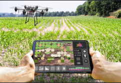
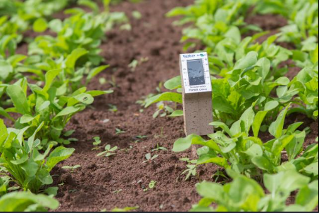

Drones na Agricultura

Os drones auxiliam no monitoramento das plantações, identificando pragas, falhas e áreas que precisam de atenção.
Sensores Inteligentes

Sensores coletam dados sobre umidade do solo, temperatura e clima.